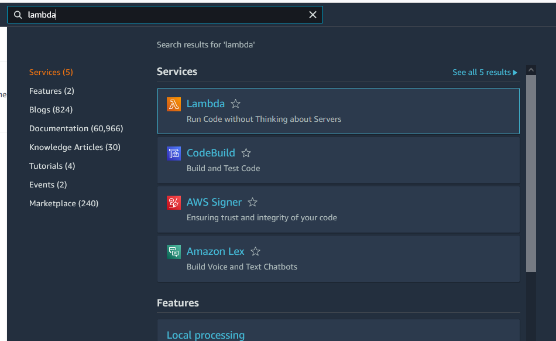
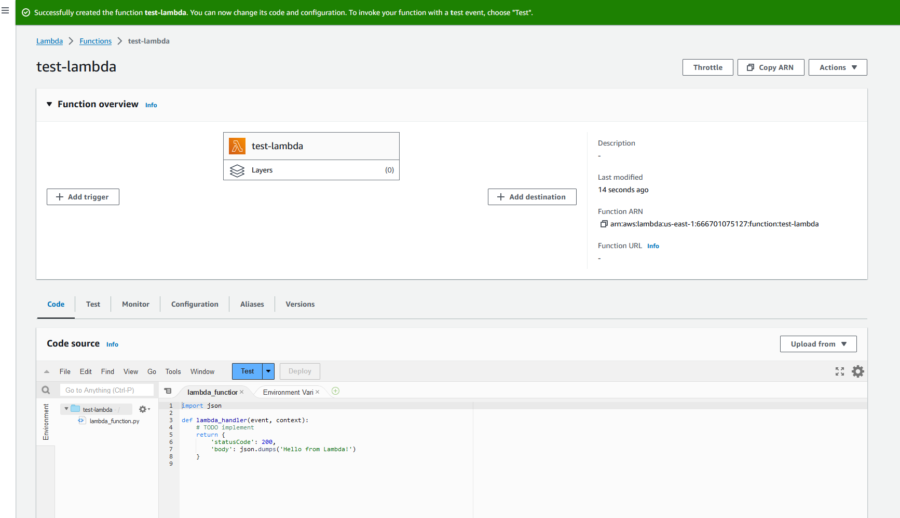
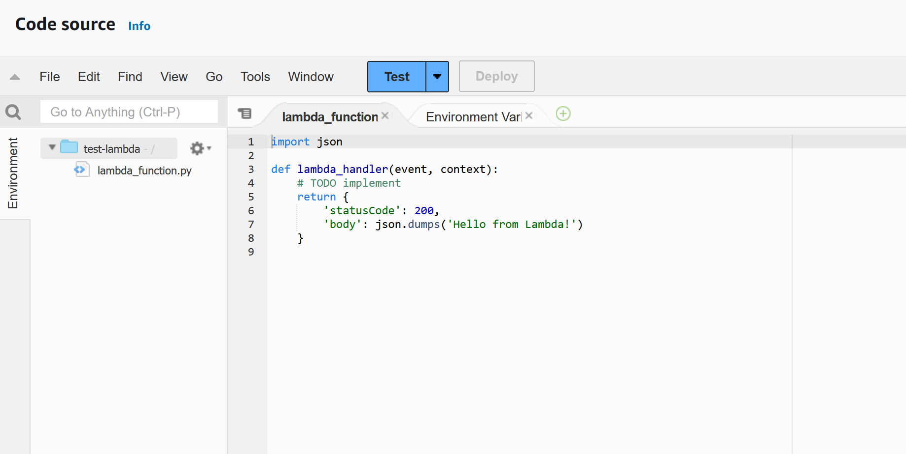
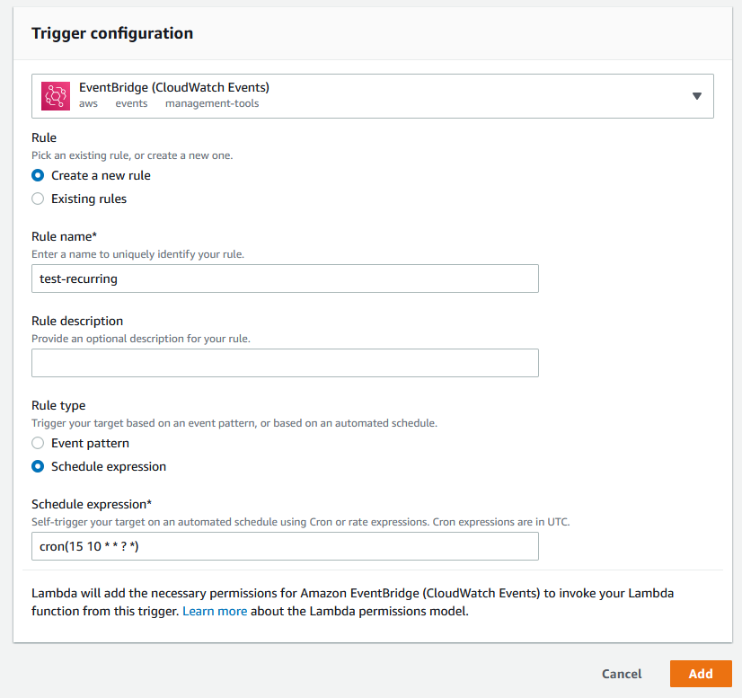
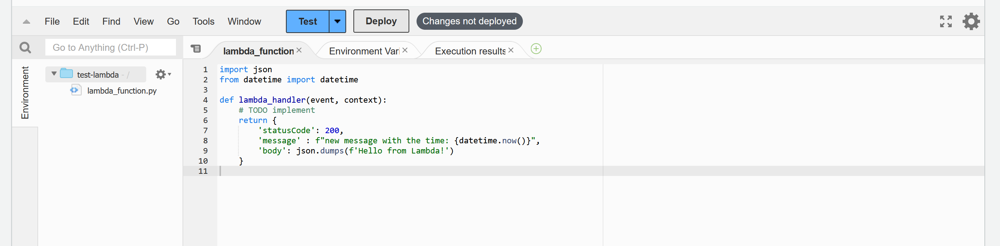
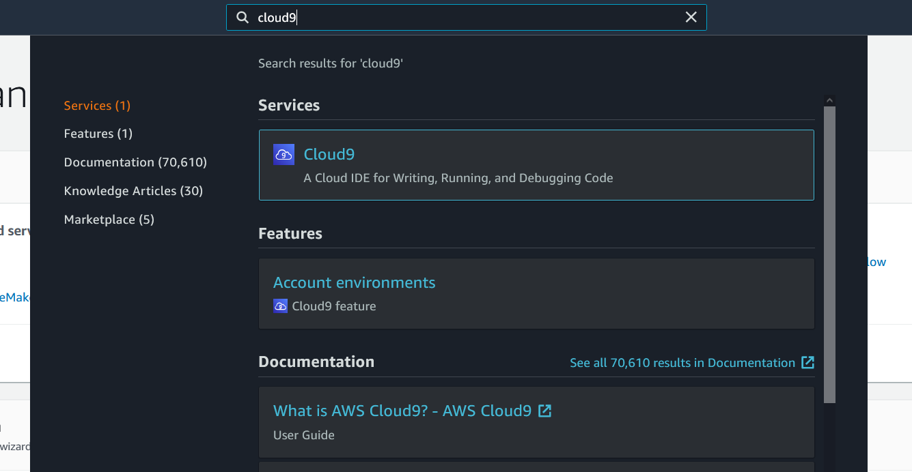
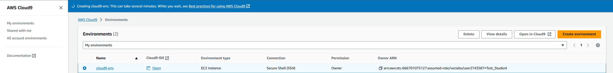
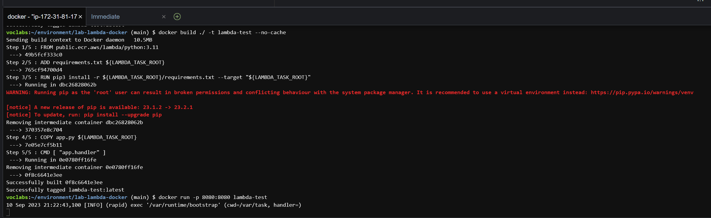
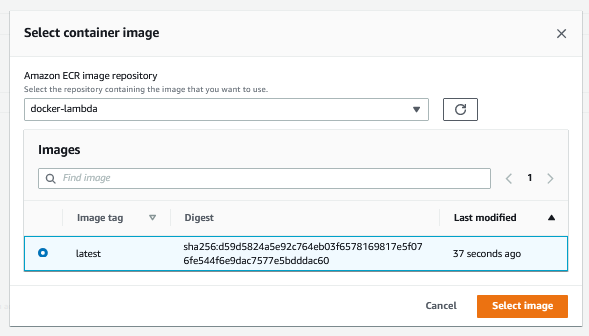
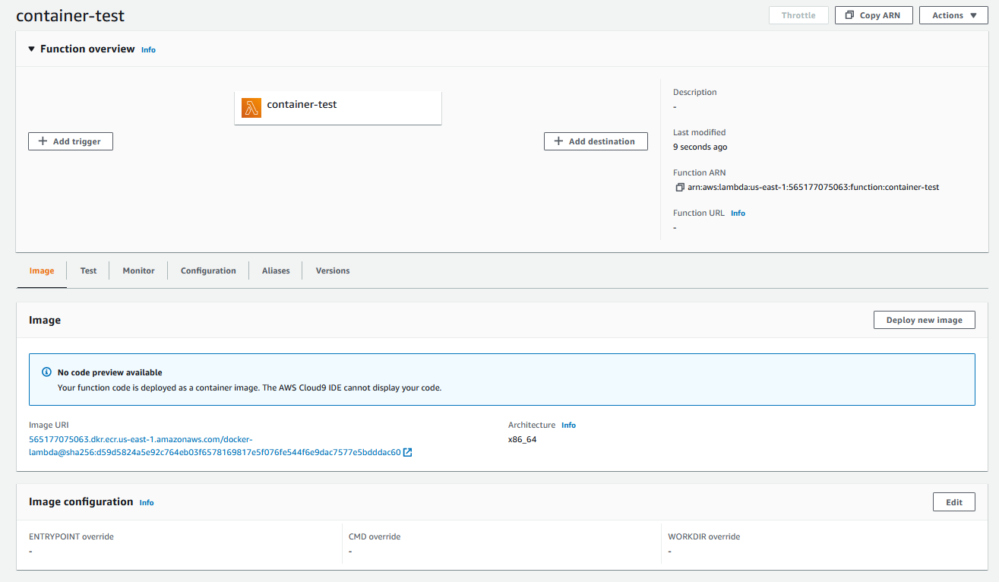

Lambda & Docker
PPOL 5206 Spring 2024
Make sure that you are connected to the Saxanet WiFi network and not the GuestNet network. SSH (TCP port 22) is blocked on GuesNet which means if you are on GuesNet you wil not be able to connect to your cloud VMs or clone repos from GitHub via SSH. Use SaxaNet.
Goals
- Write your first Lambda function
- Explore the Lambda environment
- Build a Docker image
- Leverage Docker for your Lambda function
Submitting the Assignment
Start the lab by opening up a word doc. Save the word doc “LambdaDockerLab-screenshots.docx”
You will follow the submission process for all labs and assignments:
- Add all your requested files to the GitHub assignment repo for the appropriate deliverable.
- Submit a final commit message called “final-submission” to your repo. This is critical so that instructional team can evaluate your work. Do not change your GitHub repo after submitting the “final-submission” commit message
Make sure you commit only the files requested, and push your repository to GitHub!
Your submission repo requires the following:
img/README.mdLambdaDockerLab.htmlapp.pyDockerfilerequirements.txtLambdaDockerLab-screenshots.docx
Lambda Basics
Lambda is a powerful tool to build serverless microfunctions in a variety of programming languages that can be triggered in a variety of ways. The execution of a Lambda can scale to meet the burst needs of users going to a website, or the number of rows of incoming data. There can be thousands of executions happening simultaneously. Lambda is billed by the millisecond (ms).
“Hello World” Lambda
Launch AWS Academy and get to the AWS Console. Find the Lambda service from the search bar. 
The dashboard shows the Lambda functions that have been made, some metrics on Lambda usage. Click on the orange Create Function button.

Here you have to fill out the details for your Lambda function. There are several parts to set up.
You will leave the default option
Author from scratchso that you can code directly from the Lambda service.Set your
Function nameasmy-first-lambda.Choose your
RuntimeasPython 3.9Click on the
Change default execution roledropdown, then selectUse an existing roleoption, and finally pick the existing roleLabRole. Once you have done these four things, click on the orangeCreate functionbutton.

You now have your environment for Lambda! In the upper function overview tab, you can select a variety of triggers and destinations for the Lambda. We will leave these alone for now. You can explore both on your own time to see the options.
Let’s start with the basic test of the “Hello World” code that was provided in the Python code. Click on the orange Test button.
This will launch a popup to configure your event. You can submit a JSON payload to the test that will mimic input data that the Lambda function can process. Start off by setting Event name to mytest. Then you can leave the Event JSON for now, but you will come back to it for future iterations of experimentation. Click on the orange save button.

Click on the orange test button again. If you click on the arrow then you can choose to change or make a new test environment like you did on the previous step.

Your test will execute, and the results will be shown. Several pieces of info are important:
- Name of the test that was conducted
- Response object that the function returned
- Function logs that include the duration of the function, billed direction, memory max (for pricing), and actual memory used
- Status in the upper right

OPTIONAL - If you wanted to set your Lambda to run on a regular schedule, like a crontab, you will need to add a trigger using EventBridge (CloudWatch Events). The Trigger add would look like this for setting a job to run every day at 10:15am UTC.

Exploring the Lambda File System - TODO
In this section, you will store three screenshots in your Word doc to show the Lambda responses from a variety of code changes to your Lambda handler function.
Each time you make a change to the code, you will have to click on the Deploy button and then the orange Test button.

1. Use the os or subprocess library in python to view the contents of the root directory. Make a new key in the return dictionary and send as the value the contents of the root directory.
2. Return the contents of the event input variable to the lambda_handler function as additional item in the return dictionary
3. Return the contents of the context input variable to the lambda_handler function as additional item in the return dictionary. This might take a few tries! How do you deal with objects that need to become strings?
Lambda and Docker
The easiest method to set up our Docker image for Lambda is using Cloud9! Follow the steps below to get Cloud9 set up.
Creating Cloud9 Environment
- Search for
cloud9in the search bar of your AWS console as shown in the figure below.

- Once on the Cloud9 splash screen, click on the orange button
Create environment.

- Enter a Name and description for your environment. The figure below shows sample text you could use. Once you enter your name and description click the orange button
Next step.

- There are a few options here. You can leave all of the defaults. Click the orange
Next stepbutton.- The Environment type section lets you pick if you want to spin up a new EC2 machine or connect to existing resources.
- The Instance type section is to select how large an instance for Cloud9. The small t2.micro instance is fine for Cloud9.
- The Platform section is for selecting the operating system for your new instance.
- The Cost-saving setting option is set so your instance will hibernate after 30 minutes so you are not charged for the instance 24/7. This is a major problem for cloud services because you can run up a bill quite quickly!
- The IAM role is for managing permissions to AWS resources like S3. Cloud9 setup will make a new role automatically.

- This screen shows the summary of the selections made for naming and configuring the environment. Click the orange
Create environmentbutton.

- The environment will be configured for you. This takes a few minutes.

Once the environment setup screen goes away then you are ready to use Cloud9. If you get a warning message, just click “OK”.
Setting up Basic Docker Images in Cloud9
Docker image building in Cloud9 is easy since the docker package is already set up. You just have to write some code and run Linux commands!
Start off by making a new folder on the lefthand folder sidebar. Call it something simple like
docker-lambda-env.Once you have the folder created, create three files in that folder called
Dockerfile,app.py, andrequirements.txt.The results should look like the below and have the symbols change automatically:
- Open up the Dockerfile and add the following text (note the # lines are comments just like python!)
# syntax=docker/dockerfile:1
# adapted from https://www.philschmid.de/aws-lambda-with-custom-docker-image
# https://docs.aws.amazon.com/lambda/latest/dg/python-image.html
FROM python:3.9-slim-buster
CMD ["python", "-c", "import platform; print(f\"version: {platform.python_version()}\")"]- Go to the terminal and change directories to the location of your Dockerfile. Run the command
docker build ./ -t test
- Run the command
docker run testto see if your Dockerfile worked!
Lambda Docker Image
- Use the new Dockerfile contents below for your Dockerfile. Note that this Dockerfile is invoking your requirements.txt file to install any packages from pip and the app.py lambda_handler function to run the python code.
# syntax=docker/dockerfile:1
# adapted from https://www.philschmid.de/aws-lambda-with-custom-docker-image
# https://docs.aws.amazon.com/lambda/latest/dg/python-image.html
FROM public.ecr.aws/lambda/python:3.9
# copy requirements file and install necessary packages
ADD requirements.txt ${LAMBDA_TASK_ROOT}
RUN pip3 install -r ${LAMBDA_TASK_ROOT}/requirements.txt --target "${LAMBDA_TASK_ROOT}"
# Copy function code to docker container
COPY app.py ${LAMBDA_TASK_ROOT}
# app (name of py file)
# handler (name of function to execute for lambda job)
CMD [ "app.lambda_handler" ]Note that the ADD and COPY commands in Docker for this instance are similar. The ADD function is more advanced and can auto-extract compressed files into the image.
Set up your python file
app.pywith a function calledlambda_handlerthat accepts theeventandcontextarguments. Wait, we have already done this in basic Lambda! Copy your function from the Lambda service. This will ensure that the response is the same through basic Lambda and through the Docker Lambda.
- Since you made changes to the Dockerfile and your app.py files, you need to build a new Docker image. Run the command
docker build ./ -t lambda-test.

- “Running” the python script requires two steps because the Lambda container is built as a listening service that will execute when there is a payload provided to it.
- Run the command
docker run -p 8080:8080 lambda-testto set up the service on your first terminal tab. This will run the service and listen for triggers. Next, click on the green plus icon and chooseNew Terminalto launch a new bash terminal.

- In this second terminal, run the command
curl -XPOST "http://localhost:8080/2015-03-31/functions/function/invocations" -d '{"payload":"hello world!"}'. This should return the same response as what you saw in the Lambda service. Also, go back to the first terminal tab to see the summary of execution message.

Lambda Yahoo Finance Exercise
Python Setup
Return the price of any stock symbol that is submitted through the payload value for Lambda. For example, I would get the DOW stock price if I ran the command: http://localhost:8080/2015-03-31/functions/function/invocations" -d '{"payload":"DOW"}'
The url has to be dynamic based on the input stock symbol: https://finance.yahoo.com/quote/DOW
Use the requests and beautifulsoup packages to build the function. Note you will need to add these libraries to the
requirements.txtfile.The starter code looks like this:
# import libraries
import requests
from bs4 import BeautifulSoup
# set url
url = f"https://finance.yahoo.com/quote/DOW"
# get the url page results
response = requests.get(url)
# try to parse Beautiful Soup
try:
soup = BeautifulSoup(response.text, "html.parser")
except Exception as e: # handle error gracefully
return {
'statusCode': 200,
'body': json.dumps(f'Here is the error message: {e}'),
} # send the error message back to the user
# find the price
price = soup.find("fin-streamer", {'data-test':"qsp-price"}).text
print(price)Coding Goals:
- Add try-except framework if the find does not work. What do you return instead?
- Make the url dynamic to the input stock symbol specified
- Integrate your code into the Lambda framework - event input and response output
Hint #1: Try developing using the python console in Cloud9 before integrating into your app.py file.
Hint #2: Once you put the code into the Lambda framework, you will have to build and run to run a development integration.
Use the following test inputs to confirm your function can handle all the errors gracefully: APPL, AAPL, appl, DOW, dow.
Take a screenshot of your terminal with all 5 test cases and their result and place into your Word doc
Once your code is ready to go with Lambda, add, commit, and push the files (app.py, Dockerfile, requirements.txt) to GitHub. Easiest way to do this is by downloading and uploading through the GitHub website.
Posting Docker Image to ECR
ECR stands for Elastic Container Registry.
Run the command
aws ecr create-repository --repository-name docker-lambdato make a new repo in the elastic container registry to store your new containers.Run the command
$(aws ecr get-login --no-include-email --region us-east-1)to grab the login information for your AWS account and store on the Cloud9 EC2 instance. This is bad practice for important accounts, but this account is just for experimenting!Run the command
cat /home/ec2-user/.docker/config.jsonto see the contents of the authentication file. Copy the address that looks similar to565177075063.dkr.ecr.us-east-1.amazonaws.comTag the image with the ECR registry by running the command
docker tag lambda-test [[THE URL YOU FOUND IN THE LAST STEP]]/docker-lambda- The example looks like
docker tag lambda-test 565177075063.dkr.ecr.us-east-1.amazonaws.com/docker-lambda - Note that you have to use your own account id, not the one in the example text!
- The final
docker-lambdais referring to the new repository you just built a few commands ago.
- The example looks like
Push the image to docker by running the command
docker push 565177075063.dkr.ecr.us-east-1.amazonaws.com/docker-lambda

Read more about pushing a Docker image to ECR here.
Docker Setup in Lambda
Go back to the Lambda dashboard by going to this link: https://us-east-1.console.aws.amazon.com/lambda/home?region=us-east-1#/discover. Make a new function by clicking on the orange Create function button.
You must select the
Container imageoption that is the third item on the top row of options for Lambda.Name your function
container-testSet your
Execution rolelike we did earlier so that you useLabRoleClick on the
Browse imagesbutton to find the container you just uploaded!

- A popup will launch and you have to select the repository (“docker lambda”) and then your image, which will be called “latest” by default. Click on the orange
Select imagebutton.

Now you see the same overview page for the Lambda. Since this is a container image and not simple code, we cannot actually preview anything. Just click on the Test tab.

Set a name for your test aapl-test and change the event JSON to look like {"payload" : "AAPL"}. Once you are satisfied, click on the Save button and then the orange Test button.

The result of your test will be shown in a green box, and just click on the Details arrow to see the summary. Note that the stock price came back successfully. The billed duration in the example is 2578 ms, with “Init duration” contributing 709.68 ms and the code execution contributing 1867.85 ms. The results are rounded to the nearest millisecond, but are calculated at the 10 microsecond level, WOW!